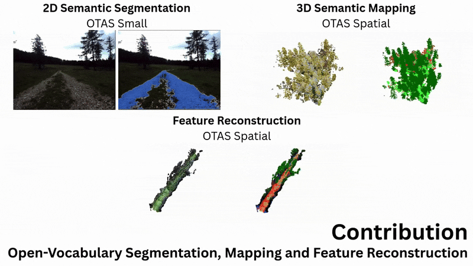
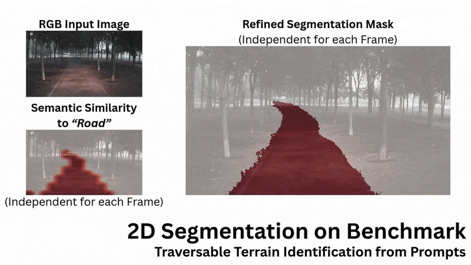
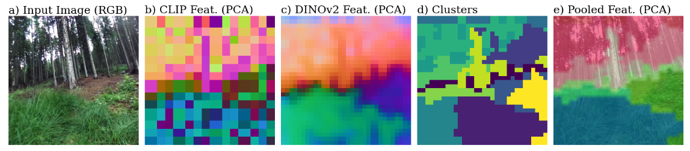
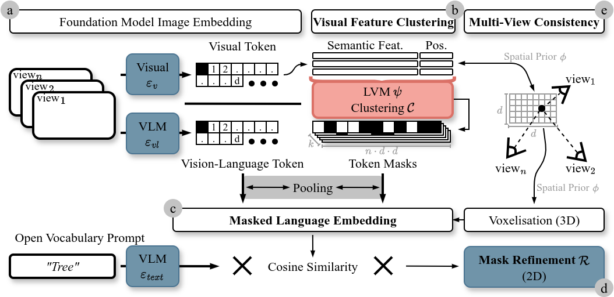
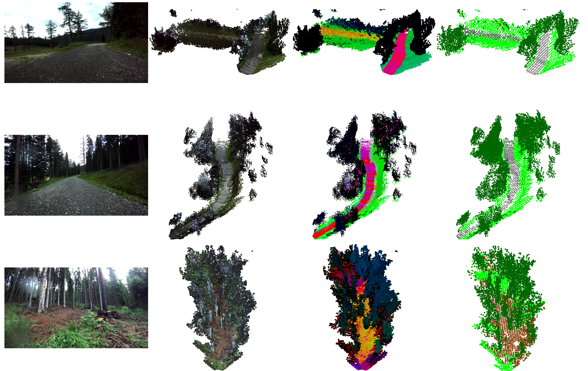
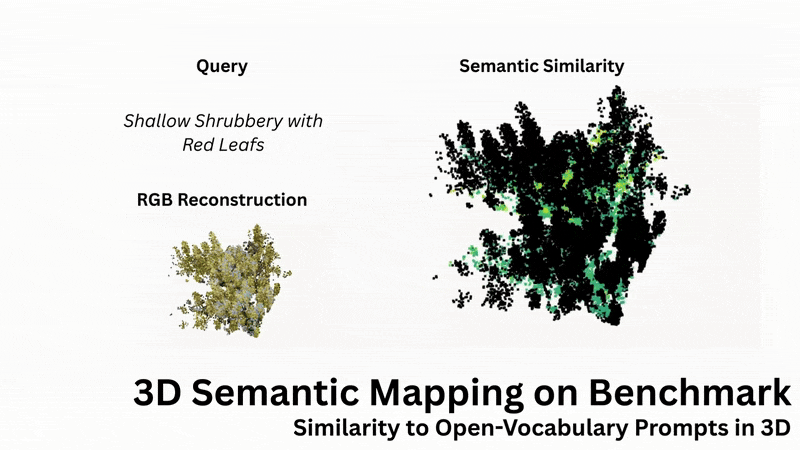
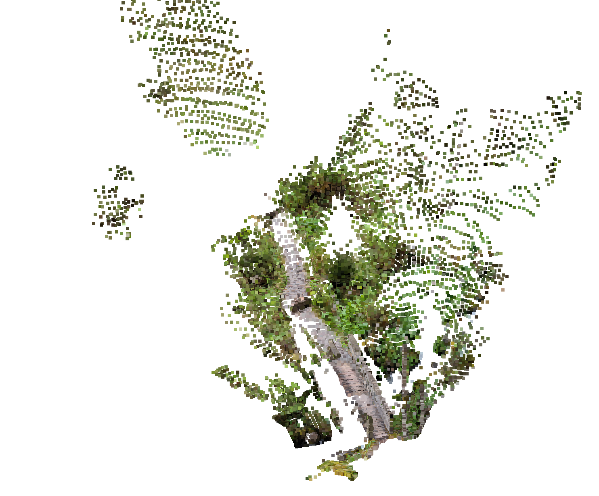
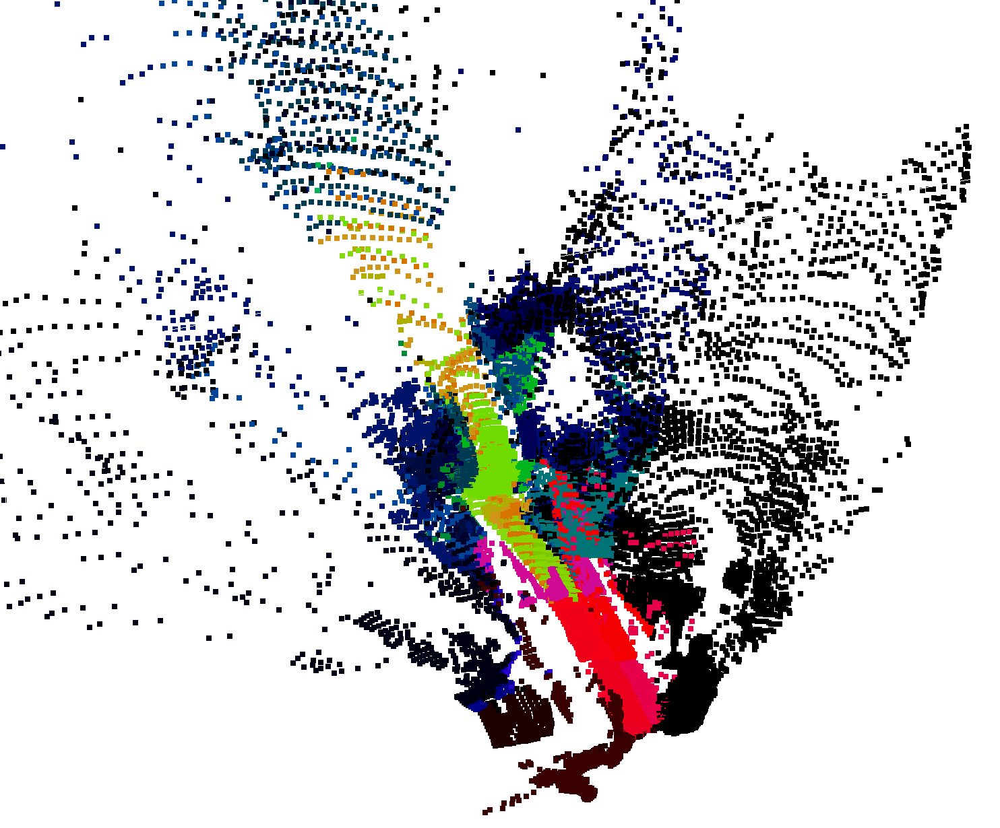
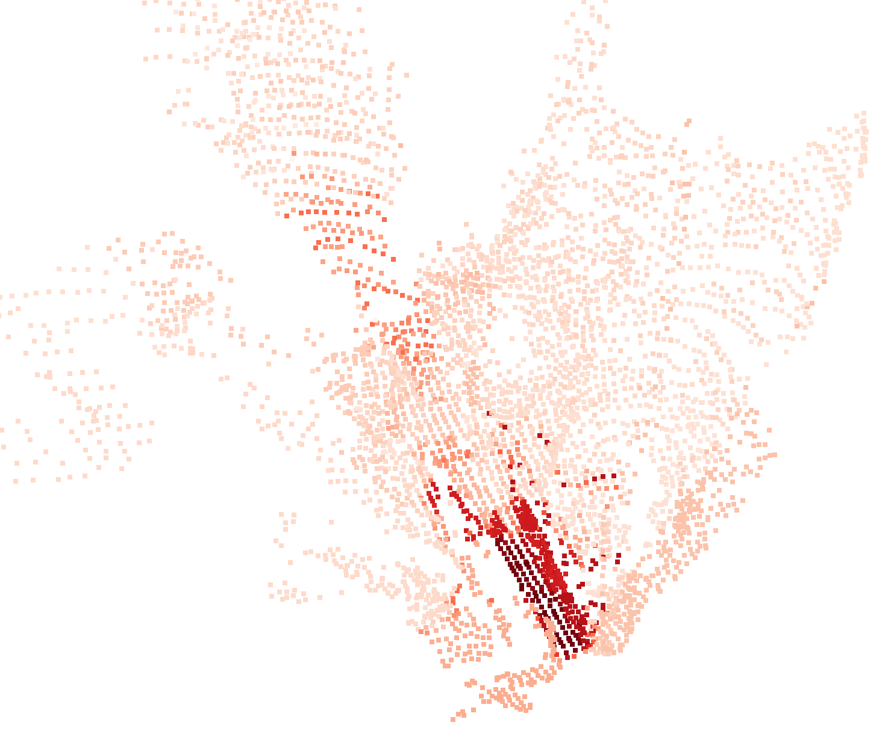

1 Graz University of Technology · 2 University of Applied Sciences Technikum Wien · 3 University of Natural Resources and Life Sciences Vienna


OTAS introduces a training-free token alignment that fuses self-supervised visual tokens with language embeddings, regularising VLM features and improving non-object-class segmentation, without per-scene tuning. It enables robust feature regularisation for non-object-centric outdoor environments.

OTAS aligns encoder output tokens through self-supervised clustering and lightweight pooling steps:

| Method | mIoU (%) |
|---|---|
| OpenFusion | 20.16 |
| ConceptGraphs | 29.85 |
| OTAS (Ours) | 49.56 |
| Method | IoU (%) |
|---|---|
| SEEM | 51.31 |
| Grounded SAM | 90.49 |
| Grounded SAM-2 | 93.32 |
| OTAS Small (Ours) | 91.72 |
| OTAS Large (Ours) | 94.34 |
Real-world reconstructions on the RoboNav Dataset demonstrate OTAS' applicability to real robotics data. From left to right: Example input image, geometric reconstruction, PCA over semantic reconstruction, and open-language segmentation over the feature field.

OTAS supports open-vocabulary similarity queries in 3D scenes, enabling retrieval and visualisation of semantic concepts such as terrain types. Contrary to existing methods, OTAS extracts dense language embeddings, even in cluttered and highly textured outdoor scenes.

OTAS only requires python dependencies and pretrained encoder checkpoints. After installation with pip, inference can be performed with just a few lines of code. We include an 11-line example for reconstruction from phone photos of a hiking trail in the Alps. From left to right: Example input image, Geometric reconstruction, PCA over semantics, similarity to prompt "wooden bridge". Check out our demo notebook and source code for more details.



If you use this work, please cite:
@misc{Schwaiger2025OTAS,
title = {OTAS: Open-vocabulary Token Alignment for Outdoor Segmentation. arXiv preprint arXiv:2507.08851},
author = {Simon Schwaiger and Stefan Thalhammer and Wilfried Wöber and Gerald Steinbauer-Wagner},
year = {2025},
url = {https://arxiv.org/abs/2507.08851}
}
We thank the authors of DINOv2,
CLIP,
Segment Anything 2,
Feature Splatting,
VGGT,
Nerfstudio,
and RADIO.
Supported by the City of Vienna (MA23 – Economic Affairs, Labour and Statistics), project
Stadt Wien Kompetenzteam für Drohnentechnik in der Fachhochschulausbildung (MA23 project 35-02).